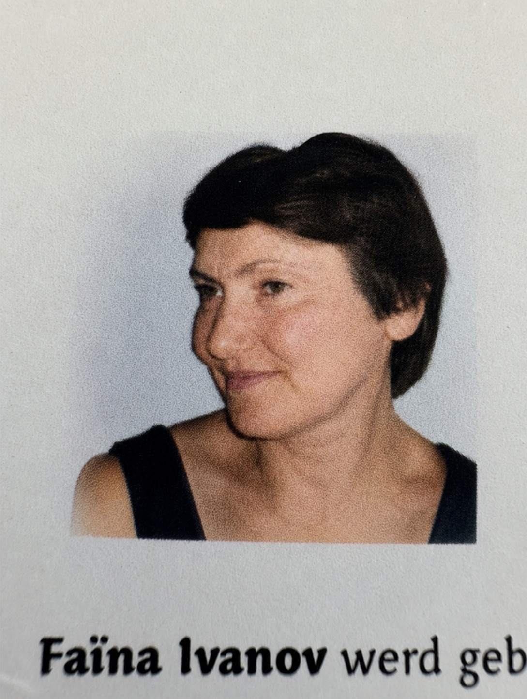

Termaat Huis, Rotterdam
Najaarsconcert
Een middag met muziek van Händel, Elgar en Mozart, met Tessa Maalcke, Faina Ivanov-Aptekar en bariton Guyon Mingelen.
Meer informatieSemper
Klassieke wereldlijke en kerkelijke koormuziek met aandacht voor samenzang, tekst en een verzorgde koorklank.
Agenda
Termaat Huis, Rotterdam
Een middag met muziek van Händel, Elgar en Mozart, met Tessa Maalcke, Faina Ivanov-Aptekar en bariton Guyon Mingelen.
Meer informatieMeer weten of meezingen?
Nieuwe leden zijn welkom om vrijblijvend een repetitie bij te wonen. Ook voor vragen over concerten of kaarten helpen we u graag verder.
Over ons

Semper Cantantes werd in 1957 opgericht. Het koor ontstond uit een groep vrouwen van medisch specialisten die rond Kerstmis zongen voor patiënten van het toenmalige Havenziekenhuis.
Vandaag telt het koor ongeveer 25 leden. Het klassieke repertoire bestaat uit wereldlijke en kerkelijke muziek, met veel aandacht voor samenzang en een verzorgde koorklank.
Muzikale leiding

Dirigent sinds 2024
Tessa studeerde klassiek zang aan Codarts in Rotterdam bij Roberta Alexander en behaalde haar diploma in 2015. Sindsdien treedt zij regelmatig op als solist bij diverse koren.
Haar repertoire omvat onder meer werken van Bach, Händel, Vivaldi en Karl Jenkins. Naast haar werk als solist en ervaren koorzanger dirigeert Tessa koren in uiteenlopende genres en geeft zij koorcoaching.

Vaste pianist sinds 2010
Faina startte haar studie piano en muziektheorie aan het conservatorium in Oezbekistan en sloot deze cum laude af. Daarna werkte zij als muziekpedagoog en begeleidster van verschillende muziekscholen.
Als begeleidster won zij meerdere prijzen en maakte zij deel uit van een kamermuziekensemble. Sinds 1993 woont zij in Nederland, waar zij met diverse muziekgezelschappen werkt en jong talent begeleidt op weg naar het concertpodium.
Archief
Met muziek van onder meer Fauré, Pergolesi, Vivaldi, Mozart, Haydn en Purcell.
Muziek over de natuur en de vier seizoenen, uitgevoerd in de Hoflaankerk.